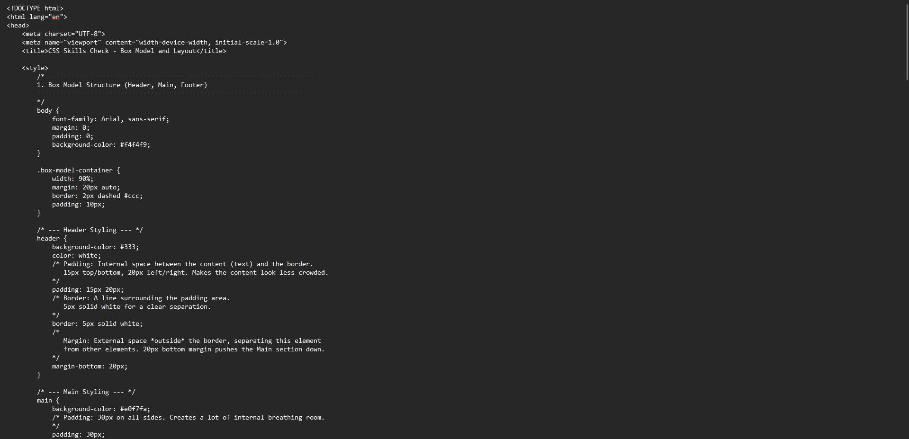
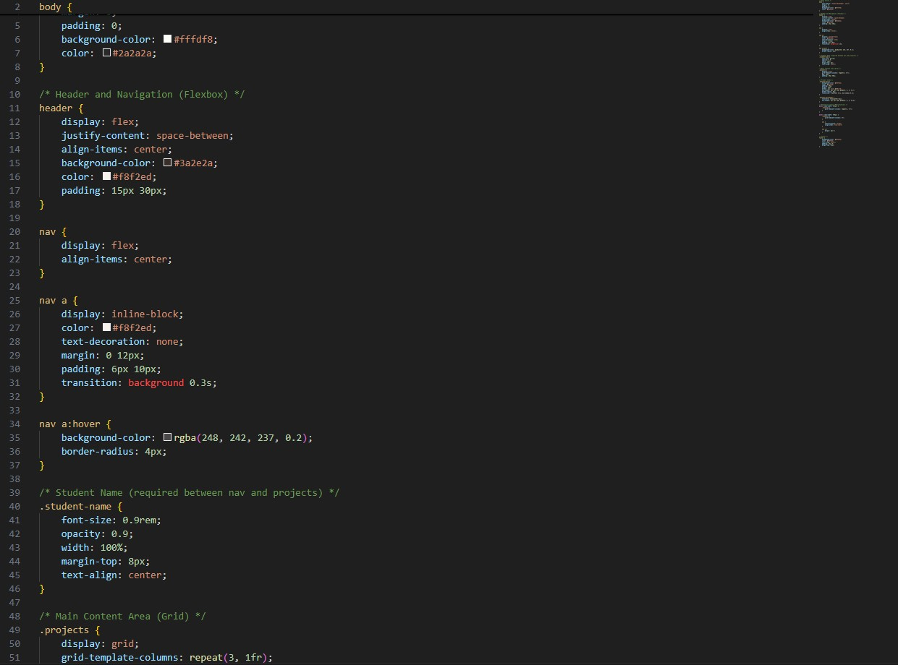

Project One
A simple responsive layout showcasing design and CSS skills.

A simple responsive layout showcasing design and CSS skills.

Interactive UI with hover effects and clean structure.
UI/UX Unity design, title screen, scalable difficulty, player interaction, and more!
hint: you can click the project title to get a link to my github repo!
Focal point work, user input based on focal point, enemy-based gameplay, enemy waves, etc.
hint: you can click the project title to get a link to my github repo!
Basic user input, jumping mechanics, animations, FX, moving obstacles/enemies, and more!
hint: you can click the project title to get a link to my github repo!